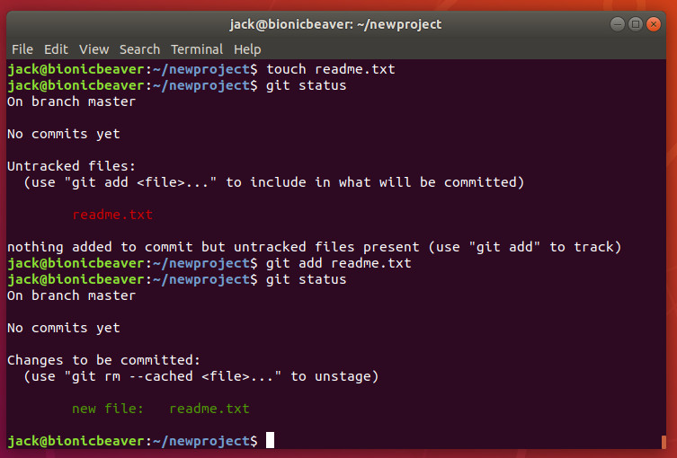

Second Entry
April 23, 2020

Today I came across a few more git commands to use in terminal and I thought why dont I just
add to my blog. These commands are super useful enabling you to control git via command line without the need for using any graphical user interface.
The commands are:
- Git log - to log all your previous commits with hashes.
- Git branch - used to list all current branches.
- Git branch "name" - Simular to above command. When used with a name it creates a branch with that name
- Git checkout "hash" - This is used to jump to different versions in time of that project
- Git merge "new branch name" - To merge your master version with a version you are happy with